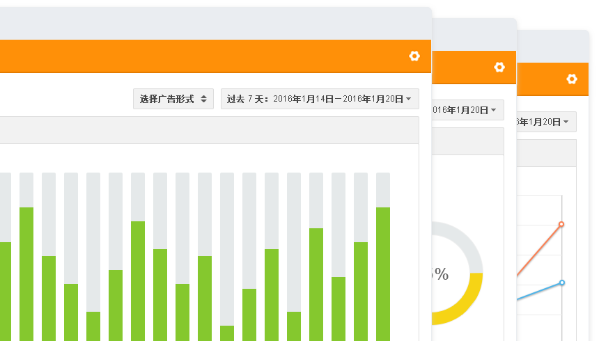

<div class="base-mode-panel panel-item6">
  <div class="clearfix left-float-panel w1200">
    <div class="wrapper-img absolute-img">
      
    </div>
    <div class="right-f main-txt inline-b w450">
      <h3 class="subTit2 deepf m-btm45">多维度分析算法</h3>
      <div class="infos gray mfont">
        <p>
            YUMIMOBI提供专业、透明、可视的数据报表系统。
        </p>
        <p>
            帮助开发者通过数据更好的分析自己的流量，优化自己的流量。
        </p>
      </div>
    </div>
  </div>
</div>